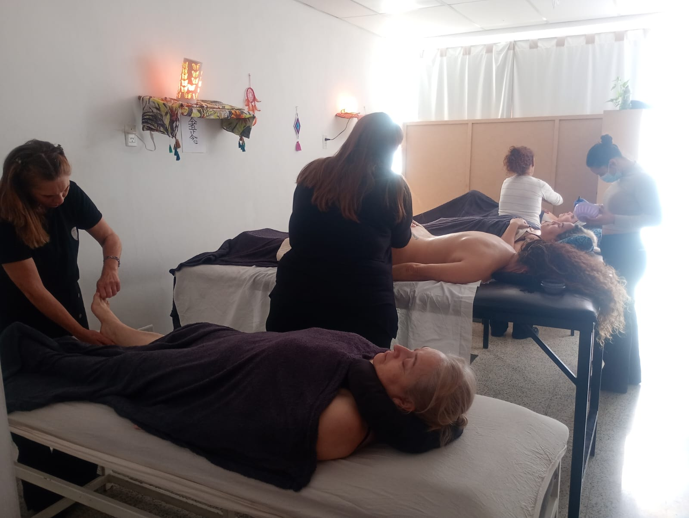

Masajes descontracturantes
Alivia tensiones y mejora la movilidad con maniobras profundas y precisas.
Por Florencia
Un espacio en Catamarca Capital para reconectar con tu cuerpo y tu calma. Técnicas profesionales, atención cálida y resultados que se sienten.
Lunes a Sábado · 09:00–12:00 y 14:00–21:00
Brasil y Monseñor Sueldo · Catamarca Capital

Alivia tensiones y mejora la movilidad con maniobras profundas y precisas.
Por Florencia
Estimulación y depuración suave para potenciar tu bienestar integral.
Por Marcela
Armoniza cuerpo y mente mediante energía canalizada.
Por Elizabeth
Perfilado de cejas y lifting de pestañas para resaltar tu mirada.
Por Mariana
“Salí renovada. El masaje descontracturante me quitó un dolor de semanas.”
“La reflexología me ayudó con la retención de líquidos. Atención súper profesional.”
“El reiki me dio una paz increíble. Volveré sin dudas.”
Puedes reservar enviándonos un mensaje por WhatsApp. Indica tu nombre, servicio deseado, profesional y disponibilidad.
Según el servicio, suelen durar entre 45 y 75 minutos. Te confirmaremos al reservar.
Sí, avisanos con al menos 24 horas de anticipación para reprogramar sin costo.